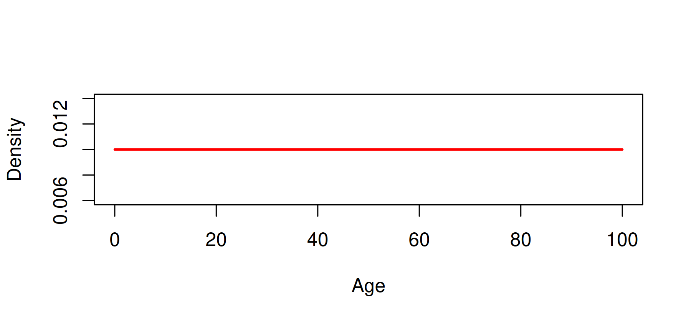
Data Lunch: Week 2
Talking about numbers differently
Last week → this week
- Last week, our answer to “will the mayor win?” was not a number.
- It was a distribution: a whole curve of more and less plausible values.
- This week we learn to read and talk about distributions, and then use them to describe how two things move together.
Goals this week
- Part 1: Concepts
- Probability distributions: describing how values vary
- Standardized values (z-scores): a common ruler
- Correlation: how two variables move together
- Regression: our first coefficient (one parameter only)
- Part 2: Applied
- What makes a house expensive?
Randomness has patterns
Problem: we want to understand how the admissions process works at a university.
Population: This isn’t about one individual case but rather a group of cases
- “Applications to this university last year”
- “Applications to this university in the last ten years”
- “Applications to all state-run universities in this country last year”
Variation: These cases are different from each other in ways that interest us
- “Exam results”
- “Family wealth”
- “Gender”
- “Department”
Randomness: Reality is messy, and we’ll never predict admission perfectly. But, randomness has patterns. We can describe how it was generated.
- If I flip a coin 1 time, I can’t say what will happen.
- If I flip a coin 1000 times, I can say a lot more.
- Random individuals → Predictable populations
Probability distributions: talking about numbers differently
Note
- We talk about probability distributions all the time: “He’s probably about 40, but he could be quite a bit older”.
- Here, we’re just visualizing that kind of description over the range of all possible values.
Uninformed I have no idea. He could be between 0 and 100 and I don’t think any possibility is more likely than any other.
Weakly informed He seems like he’s about 40, but I could be very wrong about that. Anything between 20 and 60 seems plausible and even more extreme values are possible.
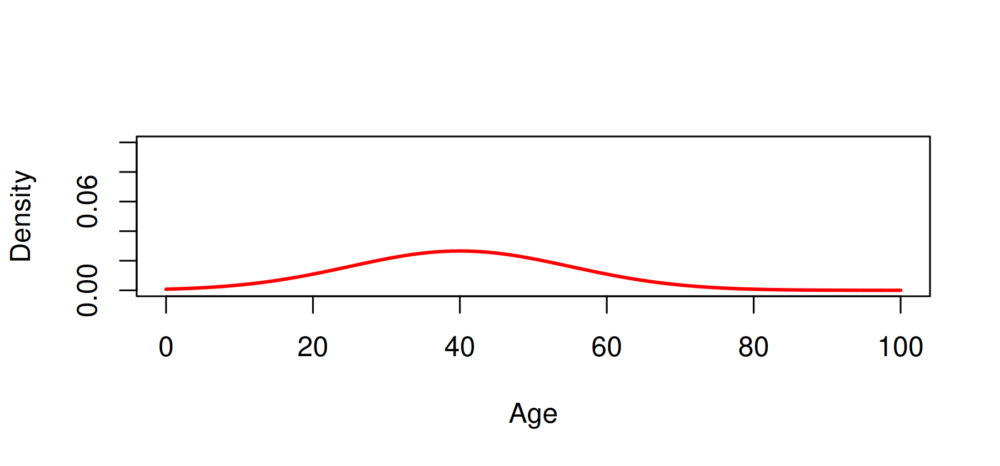
Strongly informed I’m quite certain that he’s forty or relatively close to it.
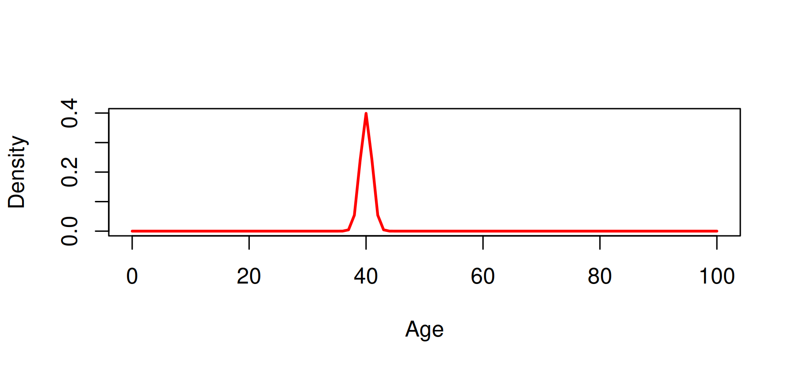
Domain-specific distributions I’m relatively certain he’s between 30 and 50, but I have really no idea where in that range he lands. Older or younger than that seems unlikely, though.
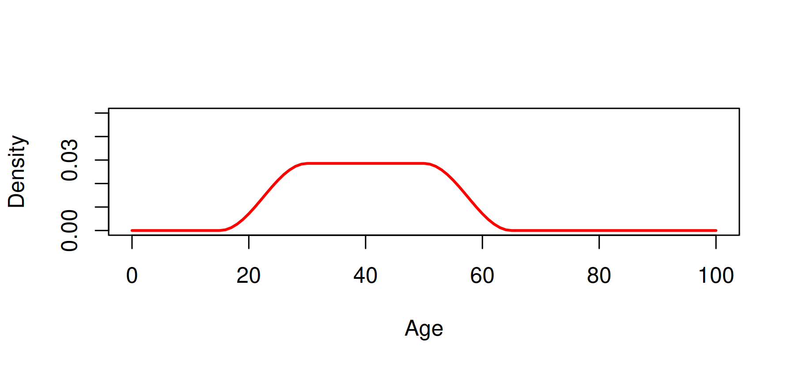
Two kinds of distributions
Distributions of data
How a quantity varies across cases.
- Heights of the adults in a village
- Prices of houses sold last year
- Ages of everyone in Nepal
Distributions of belief
How plausible each value of a parameter is.
- The mayor’s share of the vote
- The age of the man in the photo
- How much heavier taller people are
Same shapes, same vocabulary, same math. Today we start with the first kind and end with the second.
A distribution of data: Nepal’s population
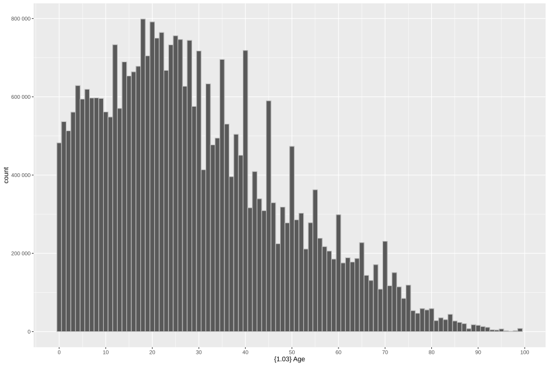
Population of Nepal
Our running example: the !Kung San
- Census data collected by anthropologist Nancy Howell in the late 1960s among the !Kung San of the Kalahari.
- 352 adults (18+).
- Height (cm), weight (kg), age, sex.
- The same data McElreath uses in Statistical Rethinking.
| height | weight | age | sex |
|---|---|---|---|
| 151.8 | 47.8 | 63 | male |
| 139.7 | 36.5 | 63 | female |
| 136.5 | 31.9 | 65 | female |
| 156.8 | 53.0 | 41 | male |
| 145.4 | 41.3 | 51 | female |
| 163.8 | 63.0 | 35 | male |
Describing a distribution
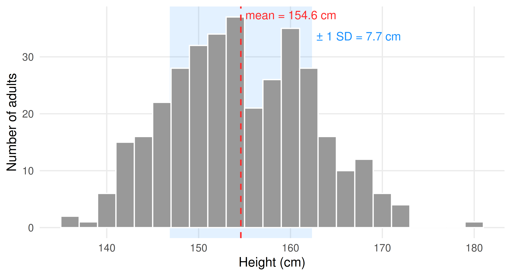
- Center: where is a typical value? (mean)
- Spread: how far is a typical case from the center? (standard deviation)
- Shape: one hump or two? Symmetric, or a long tail?
The Normal distribution
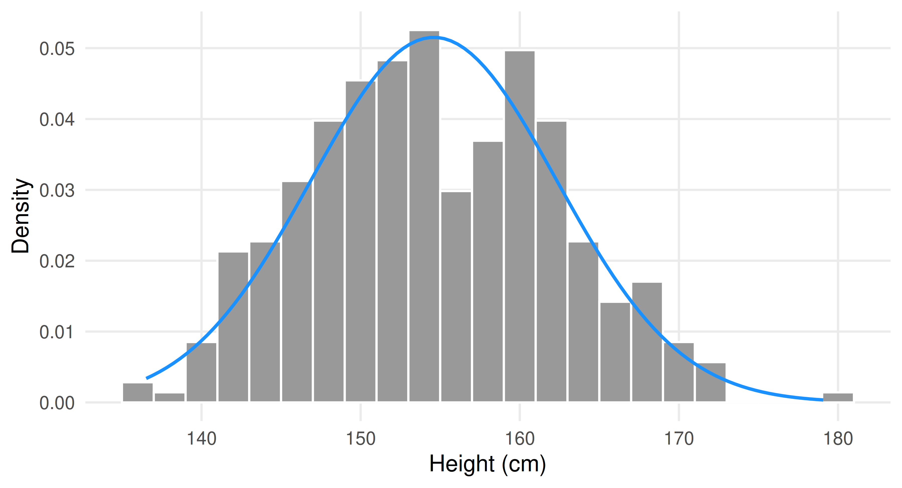
- The blue curve is a Normal distribution with
- mean = 154.6
- SD = 7.7
- Two numbers describe the whole shape.
- Real data is never perfectly Normal, but many things are close.
\[ \text{height} \sim \text{Normal}(\mu = 154.6,\ \sigma = 7.7) \]
The 68–95–99.7 rule
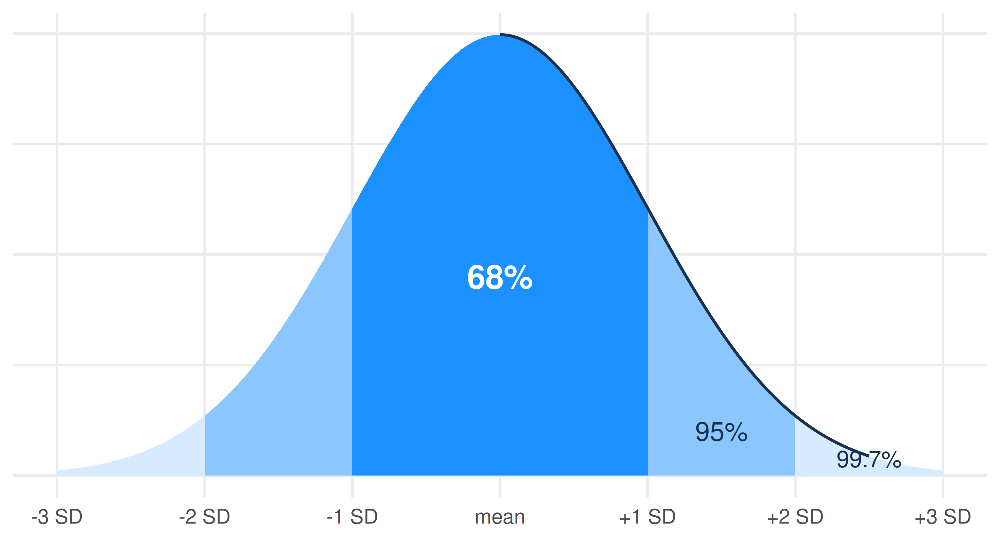
- For a Normal distribution, about 68% of cases fall within 1 SD of the mean, 95% within 2 SD.
- Check: 65% of !Kung adults are within 1 SD of the average height, and 96% within 2 SD.
Distributions Demo
#| '!! shinylive warning !!': |
#| shinylive does not work in self-contained HTML documents.
#| Please set `embed-resources: false` in your metadata.
#| standalone: true
library(shiny)
library(bslib)
library(shinyjs)
library(ggplot2)
library(ggiraph)
library(munsell)
# Replace STYLE to add sidebar flex classes
STYLE <- HTML(
"
.btn{
--bs-btn-padding-x: 0 !important;
}
.btnrow {
display: flex;
gap: 4px;
align-items: stretch;
}
/* new: sidebar flex layout */
.sidebar-flex {
display: flex;
flex-direction: column;
height: 100%;
gap: 8px;
}
.sidebar-flex .params {
flex: 1 1 auto;
overflow: auto;
padding-bottom: 8px;
}
.sidebar-flex .simulation {
flex: 0 0 auto;
margin-top: auto; /* ensure it sits at the bottom */
}
/* ensure full-height behavior inside the built-in sidebar container */
.sidebar > .sidebar-content {
display: flex;
flex-direction: column;
height: 100%;
}
"
)
ui <- page_sidebar(
sidebar = sidebar(
open = "always",
width = 400,
tags$style(STYLE),
# wrap params and simulation into two flex units
div(
class = "sidebar-flex",
# parameters area (scrollable)
div(
class = "params",
h2("Probability Distributions"),
selectizeInput(
"distType",
"Distribution Type",
list(
"Bernoulli",
"Binomial",
"Normal",
"Uniform",
"Exponential",
"Poisson",
"Beta",
"Gamma"
),
selected = "Binomial",
multiple = FALSE
),
# BERNOULLI
conditionalPanel(
condition = "input.distType == 'Bernoulli'",
sliderInput(
"bern_p",
"Success Probability",
min = 0,
max = 100,
value = 50,
step = 1,
post = "%"
),
p(
tags$b("Generating Process:"),
"A Bernoulli distribution is generated by running a single trial with two outcomes (success/failure). The result is 1 for success and 0 for failure."
),
p(tags$i(
"Examples: (1) whether a single coin flip is heads (1) or tails (0); (2) whether a single email is spam (1) or not (0); (3) whether a single product is defective (1) or not (0)."
))
),
# BINOMIAL
conditionalPanel(
condition = "input.distType == 'Binomial'",
sliderInput(
"successRate",
"Success Rate",
min = 0,
max = 100,
value = 50,
step = 1,
post = "%"
),
numericInput(
"trialCount",
"Number of Trials",
value = 10,
min = 1,
max = 1000
),
p(
tags$b("Generating Process:"),
"A binomial distribution is generated by repeating a random event a certain number of times and counting how many times a particular outcome occurs."
),
p(tags$i(
"Examples: (1) flipping a coin 20 times and counting how many heads occur; (2) testing 50 light bulbs and counting how many are defective; (3) asking 10 survey respondents a yes/no question and counting how many answer 'yes.'"
))
),
# NORMAL
conditionalPanel(
condition = "input.distType == 'Normal'",
numericInput("mean", "Mean", value = 0),
numericInput("sd", "Standard Deviation", value = 1, min = 0.0001),
p(
tags$b(
"Generating Process:"
),
"A normal distribution is generated when many small and independent random influences combine."
),
p(tags$i(
"Examples: (1) Measurement errors arising from many small sources of variation in a laboratory instrument. (2) Adult human heights within a homogeneous population. (3) Test scores on a well-designed exam taken by many students."
))
),
# UNIFORM
conditionalPanel(
condition = "input.distType == 'Uniform'",
numericInput("umin", "Minimum", value = 0),
numericInput("umax", "Maximum", value = 1),
p(
tags$b(
"Generating Process:"
),
"A uniform distribution is generated when all values over a fixed interval have equal chance of arising."
),
p(tags$i(
"Examples: (1) Choosing a random card from a well-shuffled deck and recording its rank. (2) Rolling a six-sided die and recording the value. (3) Picking a number between 1 and 100 randomly."
))
),
# EXPONENTIAL
conditionalPanel(
condition = "input.distType == 'Exponential'",
numericInput("exp_rate", "Rate (λ)", value = 1, min = 1e-8),
p(
tags$b(
"Generating Process:"
),
"An exponential distribution is generated by measuring the waiting time until the next occurrence of an event that happens randomly at a constant average rate."
),
p(tags$i(
"Examples: (1) Time between incoming calls at a call center when calls occur randomly. (2) Time until an electronic device fails randomly. (3) Time until a cat is adopted from an animal shelter when all animals are adopted at a steady rate."
))
),
# POISSON
conditionalPanel(
condition = "input.distType == 'Poisson'",
numericInput("poisson_lambda", "Lambda (mean)", value = 1, min = 0),
p(
tags$b(
"Generating Process:"
),
"A Poisson distribution is generated by counting how many events occur within a fixed interval when events happen independently and randomly at a constant average rate."
),
p(tags$i(
"Examples: (1) Number of emails received in one hour. (2) Number of typing errors on a page of text. (3) Number of customers arriving at a store in a 10-minute period."
))
),
# BETA
conditionalPanel(
condition = "input.distType == 'Beta'",
numericInput("beta_alpha", "Alpha (α)", value = 2, min = 1e-8),
numericInput("beta_beta", "Beta (β)", value = 2, min = 1e-8),
p(
tags$b("Generating Process:"),
"A beta distribution is generated by modeling an unknown probability or proportion on the interval [0,1] using accumulated evidence about successes and failures, producing a flexible distribution over plausible values of that probability."
),
p(tags$i(
"Examples: (1) Modeling the true success probability of a coin after observing some number of heads and tails. (2) Modeling the fraction of time a machine is operational when past uptime and downtime observations inform the estimate. (3) Describing the proportion of a population with a certain trait when prior information and sample data are combined."
))
),
# GAMMA
conditionalPanel(
condition = "input.distType == 'Gamma'",
numericInput("gamma_shape", "Shape (k)", value = 2, min = 1e-8),
numericInput("gamma_rate", "Rate (θ⁻¹)", value = 1, min = 1e-8),
p(
tags$b(
"Generating Process:"
),
"A gamma distribution is generated by measuring the total waiting time until a fixed number of independent events occur."
),
p(tags$i(
"Examples: (1) Total waiting time for a set number of calls to arrive at a call center with steady arrival intensity. (2) Total time until the 5th customer arrives at a service desk. (3) Time until a system experiences its 3rd failure when failures occur randomly at a constant rate."
))
)
), # end params
# simulation area pinned to bottom
div(
hr(),
class = "simulation",
h3("Simulation"),
div(
div(
style = "padding-bottom: 6px;",
class = "btnrow",
actionButton("draw1", "Run 1", style = "flex: 1;"),
actionButton("draw10", "×10", style = "flex: 1;"),
actionButton("draw100", "×100", style = "flex: 1;"),
actionButton("draw1000", "×1000", style = "flex: 1;")
),
div(
class = "btnrow",
actionButton(
"reset",
"Reset",
class = "btn btn-danger",
style = "flex: 1;"
)
)
)
) # end simulation
) # end sidebar-flex
),
mainPanel(
width = 12,
girafeOutput("plot", width = "100%"),
uiOutput("sim_list") # simulation results list
)
)
server <- function(input, output, session) {
draws <- reactiveVal(numeric(0))
observeEvent(input$axis_modal, {
showModal(
modalDialog(
title = "Axis limits",
checkboxInput(
"manual_xlim",
"Manual x-axis range",
value = isTRUE(input$manual_xlim)
),
conditionalPanel(
condition = "input.manual_xlim === true",
numericInput("xlim_min", "x-min", value = input$xlim_min %||% NA),
numericInput("xlim_max", "x-max", value = input$xlim_max %||% NA)
),
checkboxInput(
"manual_ylim",
"Manual y-axis range",
value = isTRUE(input$manual_ylim)
),
conditionalPanel(
condition = "input.manual_ylim === true",
numericInput("ylim_min", "y-min", value = input$ylim_min %||% NA),
numericInput("ylim_max", "y-max", value = input$ylim_max %||% NA)
),
footer = tagList(
tags$button(
type = "button",
class = "btn btn-secondary",
`data-bs-dismiss` = "modal",
style = "padding-left:10px; padding-right:10px;",
"Close"
)
)
)
)
})
observeEvent(
list(
input$trialCount,
input$successRate,
input$bern_p,
input$distType,
input$mean,
input$sd,
input$umin,
input$umax,
input$exp_rate,
input$poisson_lambda,
input$beta_alpha,
input$beta_beta,
input$gamma_shape,
input$gamma_rate,
input$manual_xlim,
input$xlim_min,
input$xlim_max,
input$manual_ylim,
input$ylim_min,
input$ylim_max
),
{
draws(numeric(0))
},
ignoreInit = TRUE
)
# helper: sanitize a positive numeric input
safe_pos <- function(x, fallback = 1) {
if (is.null(x) || !is.finite(x) || x <= 0) fallback else x
}
safe_nonneg <- function(x, fallback = 1) {
if (is.null(x) || !is.finite(x) || x < 0) fallback else x
}
add_draws <- function(k) {
new <- switch(
input$distType,
"Bernoulli" = rbinom(k, size = 1, prob = input$bern_p / 100),
"Binomial" = rbinom(
k,
size = input$trialCount,
prob = input$successRate / 100
),
"Normal" = rnorm(k, mean = input$mean, sd = safe_pos(input$sd)),
"Uniform" = runif(k, min = input$umin, max = input$umax),
"Exponential" = rexp(k, rate = safe_pos(input$exp_rate)),
"Poisson" = rpois(k, lambda = safe_nonneg(input$poisson_lambda)),
"Beta" = rbeta(
k,
shape1 = safe_pos(input$beta_alpha),
shape2 = safe_pos(input$beta_beta)
),
"Gamma" = rgamma(
k,
shape = safe_pos(input$gamma_shape),
rate = safe_pos(input$gamma_rate)
),
numeric(0)
)
draws(c(draws(), new))
}
observeEvent(input$draw1, add_draws(1))
observeEvent(input$draw10, add_draws(10))
observeEvent(input$draw100, add_draws(100))
observeEvent(input$draw1000, add_draws(1000))
observeEvent(input$reset, {
# clear simulated draws
draws(numeric(0))
# reset UI controls to their defaults (match UI definitions)
updateSelectizeInput(session, "distType", selected = "Binomial")
updateSliderInput(session, "bern_p", value = 50)
updateSliderInput(session, "successRate", value = 50)
updateNumericInput(session, "trialCount", value = 10)
updateNumericInput(session, "mean", value = 0)
updateNumericInput(session, "sd", value = 1)
updateNumericInput(session, "umin", value = 0)
updateNumericInput(session, "umax", value = 1)
updateNumericInput(session, "exp_rate", value = 1)
updateNumericInput(session, "poisson_lambda", value = 1)
updateNumericInput(session, "beta_alpha", value = 2)
updateNumericInput(session, "beta_beta", value = 2)
updateNumericInput(session, "gamma_shape", value = 2)
updateNumericInput(session, "gamma_rate", value = 1)
updateCheckboxInput(session, "manual_xlim", value = FALSE)
updateNumericInput(session, "xlim_min", value = NA)
updateNumericInput(session, "xlim_max", value = NA)
updateCheckboxInput(session, "manual_ylim", value = FALSE)
updateNumericInput(session, "ylim_min", value = NA)
updateNumericInput(session, "ylim_max", value = NA)
})
output$plot <- renderGirafe({
sim <- draws()
# ---------- helpers ----------
empty_plot <- function() girafe(ggplot(), width_svg = 12, height_svg = 8)
# common theme
base_theme <- theme_minimal() +
theme(plot.margin = margin(10, 30, 30, 10))
# ---------- spec builder ----------
get_dist_spec <- function(sim) {
dist <- input$distType
# ---- BERNOULLI ----
if (dist == "Bernoulli") {
p <- input$bern_p / 100
theory <- data.frame(
x = 0:1,
prob = dbinom(0:1, 1, p)
)
list(
type = "discrete",
theory = theory,
xlim = c(0, 1),
ymax = max(theory$prob),
xlabel = "Outcome (0/1)",
ylabel = "Probability",
tooltip_theory = function(df) {
paste0(
"Outcome = ",
df$x,
"<br>Probability = ",
round(df$prob, 4)
)
}
)
} else if (dist == "Binomial") {
# ---- BINOMIAL ----
n <- input$trialCount
p <- input$successRate / 100
theory <- data.frame(
x = 0:n,
prob = dbinom(0:n, n, p)
)
list(
type = "discrete",
theory = theory,
xlim = c(0, n),
ymax = max(theory$prob),
xlabel = "Number of successes",
ylabel = "Probability",
tooltip_theory = function(df) {
paste0(
"Success = ",
df$x,
" out of ",
n,
"<br>Probability = ",
round(df$prob, 4)
)
}
)
} else if (dist == "Normal") {
# ---- NORMAL ----
mu <- input$mean
sd <- safe_pos(input$sd)
x_min <- mu - 4 * sd
x_max <- mu + 4 * sd
xs <- seq(x_min, x_max, length.out = 400)
theory <- data.frame(
x = xs,
density = dnorm(xs, mu, sd)
)
list(
dist = "Normal",
params = list(mu = mu, sd = sd),
type = "continuous",
theory = theory,
xlim = c(x_min, x_max),
ymax = max(theory$density),
xlabel = "Value",
ylabel = "Density"
)
} else if (dist == "Uniform") {
# ---- UNIFORM ----
a <- input$umin
b <- input$umax
if (b <= a) {
return(NULL)
}
xs <- seq(a, b, length.out = 400)
theory <- data.frame(
x = xs,
density = dunif(xs, a, b)
)
list(
type = "continuous",
theory = theory,
xlim = c(a, b),
ymax = max(theory$density),
xlabel = "Value",
ylabel = "Density",
expand_mult = c(0, .85)
)
} else if (dist == "Exponential") {
# ---- EXPONENTIAL ----
rate <- safe_pos(input$exp_rate)
x_min <- 0
x_max <- qexp(.999, rate)
xs <- seq(x_min, x_max, length.out = 400)
theory <- data.frame(
x = xs,
density = dexp(xs, rate)
)
list(
type = "continuous",
theory = theory,
xlim = c(x_min, x_max),
ymax = max(theory$density),
xlabel = "Value",
ylabel = "Density"
)
} else if (dist == "Poisson") {
# ---- POISSON ----
lambda <- safe_nonneg(input$poisson_lambda)
x_max_theory <- ceiling(qpois(.999, lambda))
x_max_sim <- if (length(sim)) {
max(ceiling(sim), x_max_theory)
} else {
x_max_theory
}
xs <- 0:x_max_sim
theory <- data.frame(
x = xs,
prob = dpois(xs, lambda)
)
list(
type = "discrete",
theory = theory,
xlim = c(0, x_max_sim),
ymax = max(theory$prob),
xlabel = "k",
ylabel = "Probability",
tooltip_theory = function(df) {
paste0("k = ", df$x, "<br>Probability = ", round(df$prob, 4))
}
)
} else if (dist == "Beta") {
# ---- BETA ----
a <- safe_pos(input$beta_alpha)
b <- safe_pos(input$beta_beta)
xs <- seq(0, 1, length.out = 400)
theory <- data.frame(
x = xs,
density = dbeta(xs, a, b)
)
list(
type = "continuous",
theory = theory,
xlim = c(0, 1),
ymax = max(theory$density),
xlabel = "Value",
ylabel = "Density"
)
} else if (dist == "Gamma") {
# ---- GAMMA ----
shape <- safe_pos(input$gamma_shape)
rate <- safe_pos(input$gamma_rate)
x_min <- 0
x_max <- qgamma(.999, shape, rate)
xs <- seq(x_min, x_max, length.out = 400)
theory <- data.frame(
x = xs,
density = dgamma(xs, shape, rate)
)
list(
type = "continuous",
theory = theory,
xlim = c(x_min, x_max),
ymax = max(theory$density),
xlabel = "Value",
ylabel = "Density"
)
} else {
NULL
}
}
# ---------- build plot ----------
spec <- get_dist_spec(sim)
if (is.null(spec)) {
return(empty_plot())
}
apply_manual_xlim <- function(spec) {
if (!isTRUE(input$manual_xlim)) {
return(spec)
}
xmin <- input$xlim_min
xmax <- input$xlim_max
if (
is.null(xmin) ||
is.null(xmax) ||
!is.finite(xmin) ||
!is.finite(xmax) ||
xmin >= xmax
) {
return(spec)
}
spec$xlim <- c(xmin, xmax)
if (spec$type == "continuous") {
if (identical(spec$dist, "Normal")) {
mu <- spec$params$mu
sd <- spec$params$sd
xs <- seq(xmin, xmax, length.out = 400)
spec$theory <- data.frame(
x = xs,
density = dnorm(xs, mu, sd)
)
} else {
spec$theory <- spec$theory[
spec$theory$x >= xmin & spec$theory$x <= xmax,
,
drop = FALSE
]
}
ymax <- max(spec$theory$density, na.rm = TRUE)
if (is.finite(ymax)) {
spec$ymax <- ymax
}
} else {
spec$theory <- spec$theory[
spec$theory$x >= xmin & spec$theory$x <= xmax,
,
drop = FALSE
]
ymax <- max(spec$theory$prob, na.rm = TRUE)
if (is.finite(ymax)) {
spec$ymax <- ymax
}
}
spec
}
spec <- apply_manual_xlim(spec)
apply_manual_ylim <- function(spec) {
if (!isTRUE(input$manual_ylim)) {
return(spec)
}
ymin <- input$ylim_min
ymax <- input$ylim_max
if (
is.null(ymin) ||
is.null(ymax) ||
!is.finite(ymin) ||
!is.finite(ymax) ||
ymin >= ymax
) {
return(spec)
}
spec$ylim <- c(ymin, ymax)
spec
}
spec <- apply_manual_ylim(spec)
g <- ggplot()
# ---- simulated layer ----
if (spec$type == "continuous") {
if (length(sim) > 0) {
g <- g +
geom_histogram_interactive(
data = data.frame(x = sim),
aes(
x = x,
y = after_stat(density),
tooltip = paste0("Count: ", after_stat(count)),
data_id = after_stat(x)
),
bins = 40,
boundary = spec$xlim[1],
fill = "steelblue",
alpha = .6,
color = "white",
linewidth = .4
)
}
g <- g +
geom_line(
data = spec$theory,
aes(x = x, y = density),
linewidth = 1
)
} else if (spec$type == "discrete") {
# sim df
df_sim <- if (length(sim) == 0) {
data.frame(x = integer(), prob = numeric(), count = integer())
} else {
tab <- table(sim)
data.frame(
x = as.integer(names(tab)),
count = as.integer(tab),
prob = as.integer(tab) / sum(tab)
)
}
g <- g +
geom_col_interactive(
data = df_sim,
aes(
x = x,
y = prob,
tooltip = paste0(
"Count: ",
count,
" out of ",
length(sim),
"<br>Proportion: ",
round(prob, 4)
),
data_id = x
),
fill = "steelblue",
width = .8,
alpha = .6
) +
geom_line(
data = spec$theory,
aes(x = x, y = prob),
linewidth = 1
) +
geom_point_interactive(
data = spec$theory,
aes(
x = x,
y = prob,
tooltip = spec$tooltip_theory(spec$theory),
data_id = paste0("theory_", spec$theory$x)
),
size = 3
) +
scale_x_continuous(
breaks = scales::breaks_pretty(n = 10, integer = TRUE)
)
}
expand_mult <- spec$expand_mult %||% c(0, .25)
g <- g +
coord_cartesian(
xlim = spec$xlim,
ylim = spec$ylim %||% c(0, spec$ymax),
clip = "off"
) +
scale_y_continuous(expand = expansion(mult = expand_mult)) +
labs(x = spec$xlabel, y = spec$ylabel) +
base_theme
girafe(ggobj = g, width_svg = 12, height_svg = 8)
})
# compact single-line simulation values, most recent on the left in bold
output$sim_list <- renderUI({
sim_vals <- draws()
# small formatter: integers as integers, others rounded to 2 decimals
fmt_val <- function(x) {
if (is.na(x)) {
return("NA")
}
if (!is.numeric(x)) {
return(as.character(x))
}
if (abs(x - round(x)) < 1e-8) {
as.character(as.integer(round(x)))
} else {
sprintf("%.2f", round(x, 2))
}
}
if (length(sim_vals) == 0) {
return(tags$div(
style = "display:flex; align-items:center; gap:12px;",
actionButton(
"axis_modal",
"Axis limits",
style = "padding-left:10px; padding-right:10px;"
),
tags$div(
style = "min-width:0;",
tags$div(
"Simulation Results:",
style = "font-weight:600; margin-bottom:4px;"
),
tags$div("No simulations yet", style = "font-size:0.9em; color:#666;")
)
))
}
max_show <- 100L
show_vals <- tail(sim_vals, max_show)
show_vals_rev <- rev(show_vals) # most recent first (left)
spans <- lapply(seq_along(show_vals_rev), function(i) {
v <- show_vals_rev[i]
txt <- fmt_val(v)
if (i == 1L) {
tags$span(
txt,
style = "font-weight:700; margin-right:10px; white-space:nowrap;"
)
} else {
tags$span(
txt,
style = "color:#333; margin-right:10px; white-space:nowrap;"
)
}
})
tags$div(
style = "display:flex; align-items:center; gap:12px;",
actionButton(
"axis_modal",
"Axis limits",
style = "padding-left:10px; padding-right:10px;"
),
tags$div(
style = "min-width:0;",
tags$div(
"Recent simulations:",
style = "font-weight:600; margin-bottom:4px;"
),
tags$div(
style = "font-size:0.9em; padding-top:2px; padding-bottom:6px; overflow-x:auto; white-space:nowrap;",
spans
)
)
)
})
}
shinyApp(ui, server)Standardized values (z-scores)
A !Kung man is 165 cm tall and weighs 58 kg. Is he more unusually tall or more unusually heavy?
- We can’t compare centimeters to kilograms.
- But we can ask of each: how many standard deviations from average is this?
\[ z = \frac{x - \text{mean}}{\text{SD}} \]
- Height: (165 − 154.6) / 7.7 = 1.34
- Weight: (58 − 45.0) / 6.5 = 2.01
- He is more unusually heavy than he is tall.
Same data, new ruler
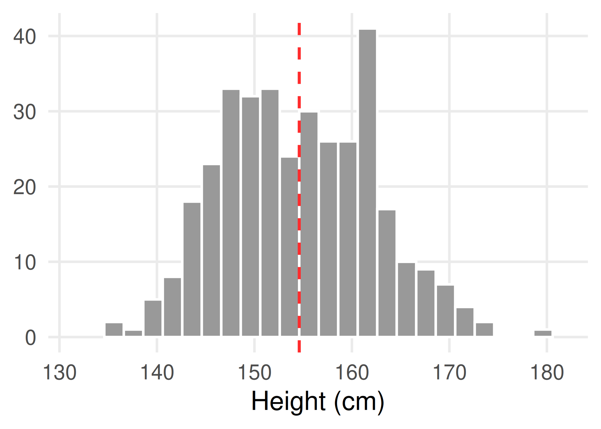
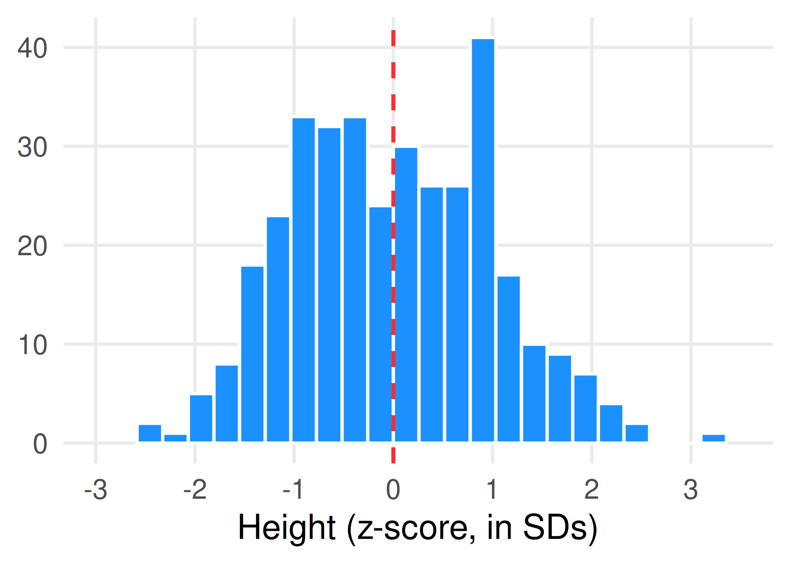
- The shape doesn’t change at all. Only the labels on the axis.
- The mean becomes 0. The standard deviation becomes 1.
- The units disappear: a z-score is measured in “standard deviations”.
Reading z-scores
| z | Meaning |
|---|---|
| 0 | exactly average |
| ±1 | ordinary |
| ±2 | unusual (about 1 in 20) |
| ±3 | rare (about 1 in 370) |
- z-scores let us compare things measured on completely different scales: exam marks out of 50 vs. out of 100, rupees vs. dollars, cm vs. kg.
Correlation
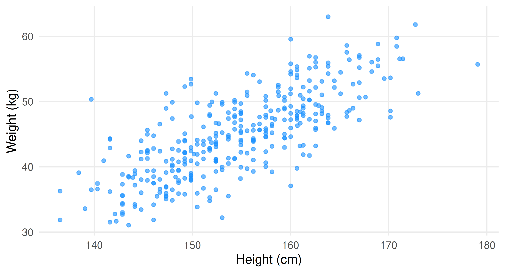
- Taller people tend to be heavier. But how strongly do they go together?
Standardize both variables
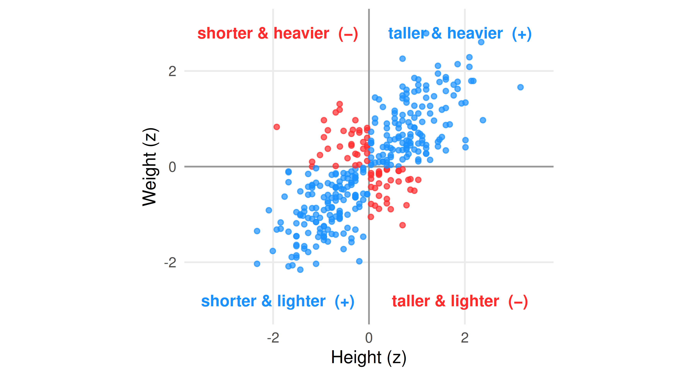
Correlation is average agreement
\[ r = \frac{1}{n-1} \sum_{i=1}^{n} z_{\text{height},i} \times z_{\text{weight},i} \]
- Each person “votes”:
- Same side of average on both → positive vote
- Opposite sides → negative vote
- r is the average vote.
What does r look like?
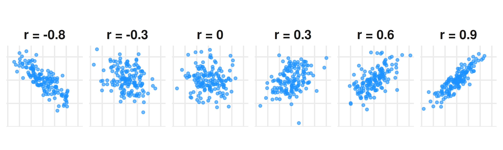
- Our height and weight: r = 0.75. A strong relationship, but far from perfect.
What correlation misses
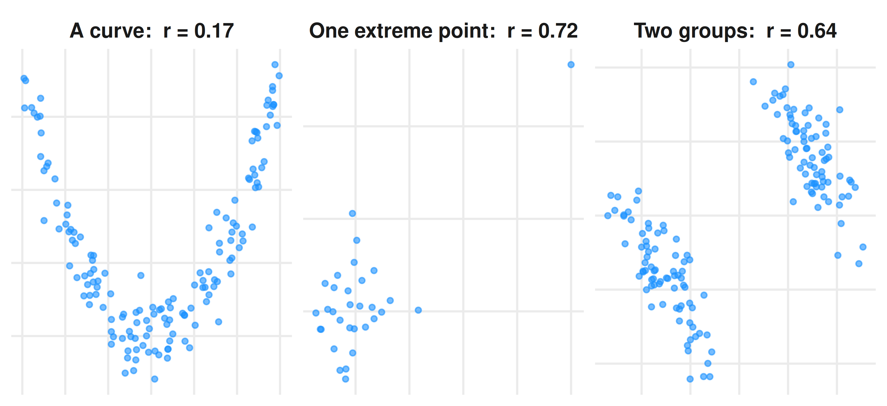
- r only measures straight-line agreement.
- Always plot your data before trusting a single number.
Regression: our first coefficient
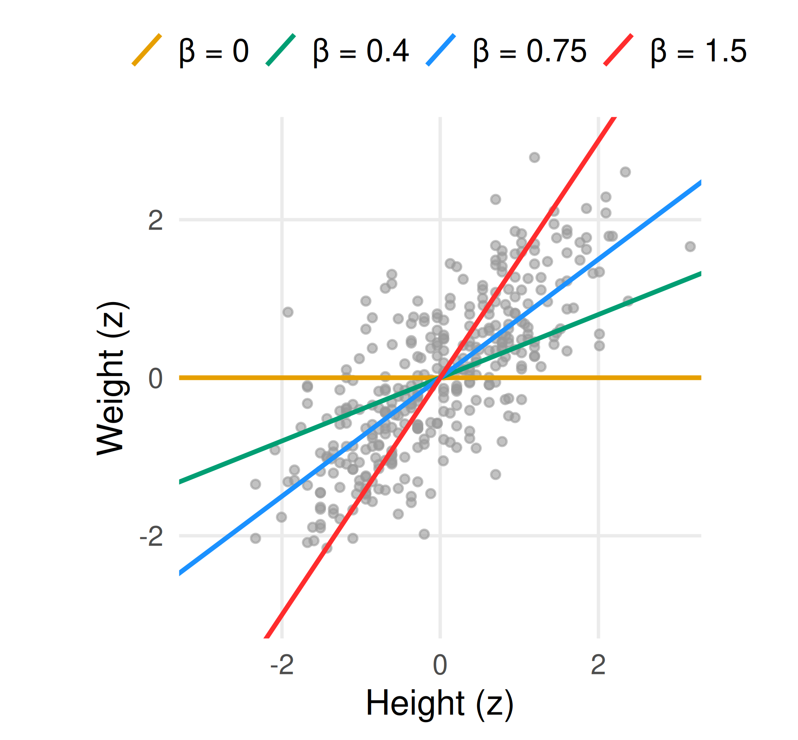
In z-space, both variables have mean 0, so a line through the middle of the cloud needs only one parameter: its slope, β.
\[ z_{\text{weight}} = \beta \times z_{\text{height}} \]
- Which line describes the data best?
The best line
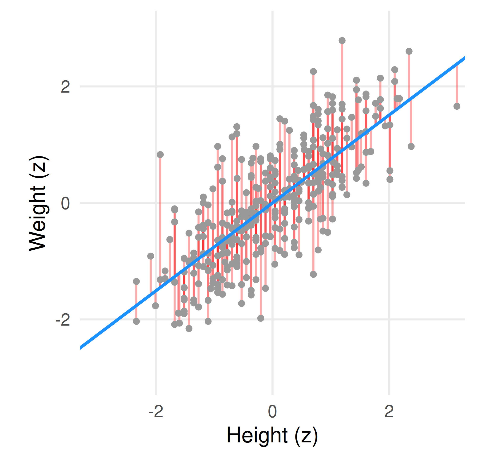
- The red lines are the errors: how far each person is from the line.
- The best line makes the errors as small as possible overall.
- With standardized data and one predictor, the best β is exactly the correlation: β = r = 0.75.
Reading the coefficient
- In z-scores: β = 0.75
- “An adult 1 SD taller than average is, on average, 0.75 SD heavier.”
- Back in real units: β × SDweight / SDheight
- 0.75 × 6.5 / 7.7 = 0.63 kg per cm
- “Each extra centimeter of height goes with about 0.63 kg more weight.”
β is a parameter, so it has a distribution
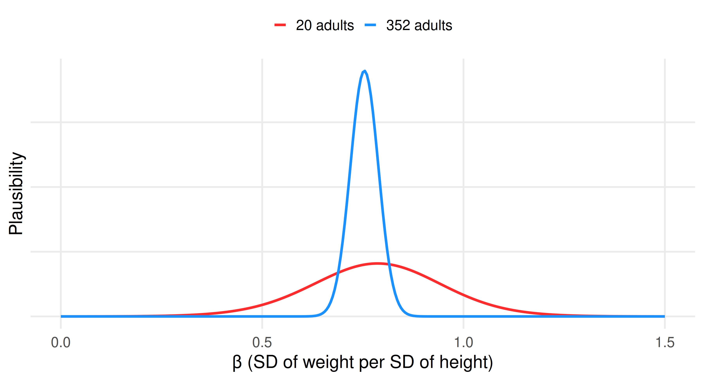
- Just like the mayor’s popularity last week: prior × likelihood → posterior.
- With 20 people we’re unsure about β. With 352, much less so.
Part 1: Summary
- Distributions: describe numbers by their center, spread, and shape, not just a single value.
- z-scores: how many SDs from the average. One ruler for everything.
- Correlation (r): the average agreement of two z-scores, from −1 to +1.
- Regression coefficient (β): the slope of the best line. With standardized data and one predictor, β = r.
- β is a parameter: we can have a prior and a posterior distribution for it.
Part 2: What makes a house expensive?
The data: house sales in Ames, Iowa
- 2,930 houses sold 2006–2010 in Ames, a US college town (De Cock, 2011). Prices in US dollars; areas converted to m².
| price | area_m2 | year_built | bedrooms | bathrooms | garage_cars |
|---|---|---|---|---|---|
| $215,000 | 153.8 | 1960 | 3 | 1 | 2 |
| $105,000 | 83.2 | 1961 | 2 | 1 | 1 |
| $172,000 | 123.5 | 1958 | 3 | 1 | 1 |
| $244,000 | 196.0 | 1968 | 3 | 2 | 2 |
| $189,900 | 151.3 | 1997 | 3 | 2 | 2 |
| $195,500 | 149.0 | 1998 | 3 | 2 | 2 |
Step 1: Look at the distribution
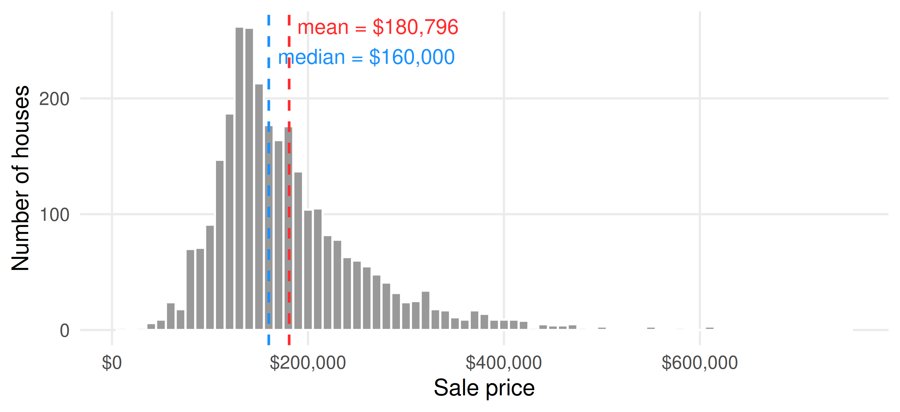
- Not Normal: a long right tail of a few very expensive houses.
- The tail pulls the mean above the median. Which is the “typical” price?
Step 2: How unusual is this house?
| Mean | SD | |
|---|---|---|
| Price | $180,796 | $79,887 |
| Living area | 139.3 m² | 47.0 m² |
| house | price | area (m²) |
|---|---|---|
| A: most expensive | $755,000 | 401.0 |
| B: largest | $160,000 | 524.1 |
Your turn: compute the z-scores for houses A and B. Which one is more unusual, and in what way?
| house | z (price) | z (area) |
|---|---|---|
| A: most expensive | 7.2 | 5.6 |
| B: largest | -0.3 | 8.2 |
Step 3: Price and living area
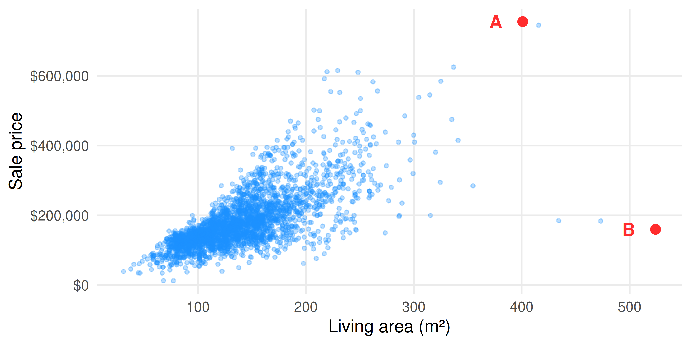
- r = 0.71. Bigger houses sell for more, but with lots of scatter.
- House B is far off the pattern. What might be going on?
Step 4: Guess first
Before we look: rank these from strongest to weakest correlation with price.
- Number of bedrooms
- Number of bathrooms
- Living area
- Lot (land) area
- Garage size (cars)
- Year built
Step 4: The correlations
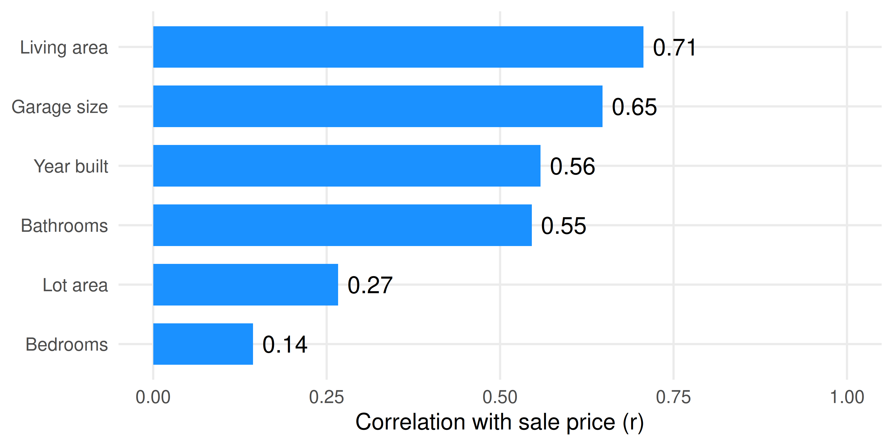
- Because r has no units, we can compare m², cars, years, and rooms on one scale.
Step 5: One coefficient
\[ z_{\text{price}} = \beta \times z_{\text{area}} \]
- In z-scores: β = 0.71
- “A house 1 SD larger than average sells, on average, for 0.71 SD more.”
- In real units: 0.71 × $79,887 / 47.0 m² ≈ $1,202 per m²
- “Each extra square meter of living space goes with about $1,202 more in price.”
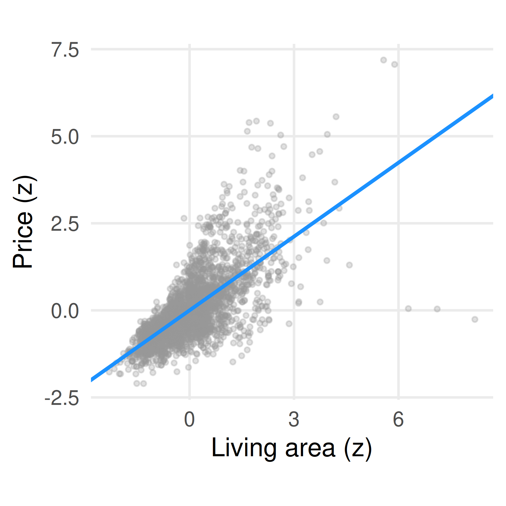
A puzzle: bedrooms
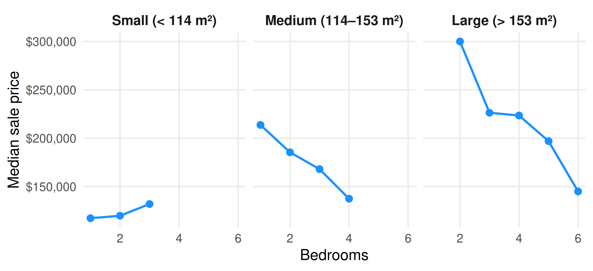
- Overall, more bedrooms go with a higher price (r = 0.14).
- But among medium and large houses of similar size, more bedrooms go with a lower price.
- How can both be true?
Next week
- Correlation and regression describe how things move together.
- They don’t tell us why.
- To answer “does adding a bedroom make a house more valuable?”, we need to say what we think causes what.
- Next week: DAGs and causal models.